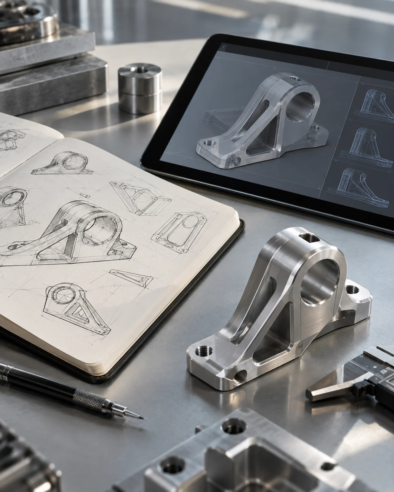
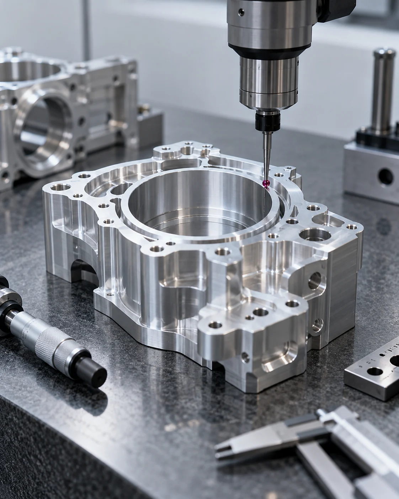
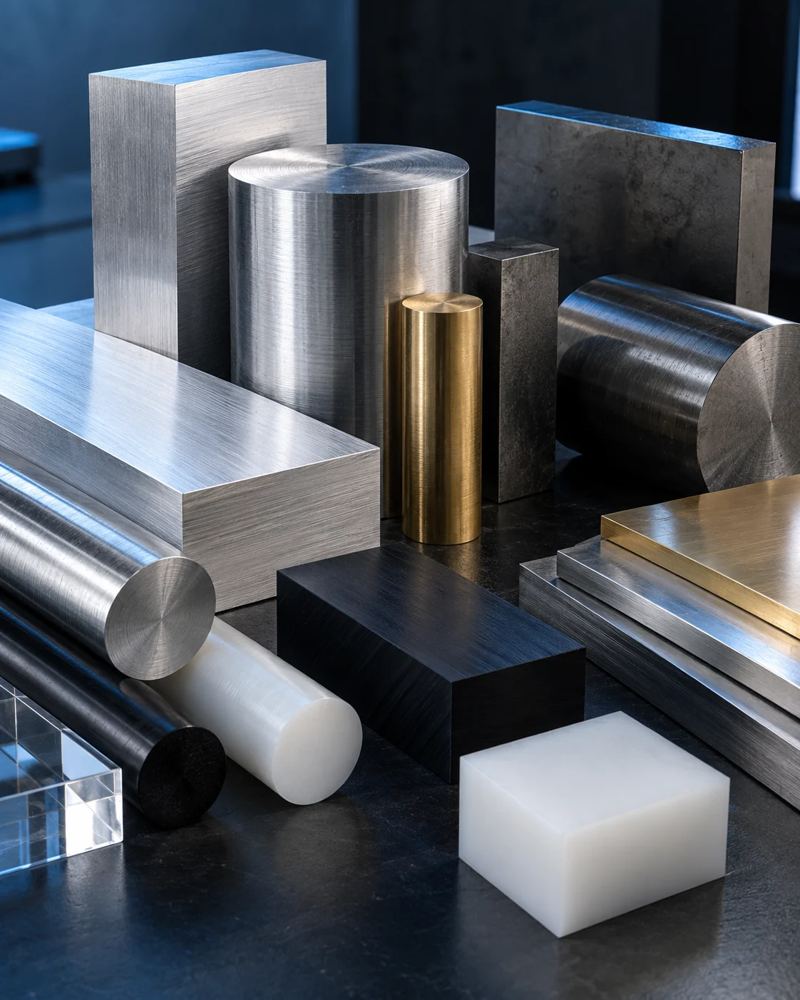
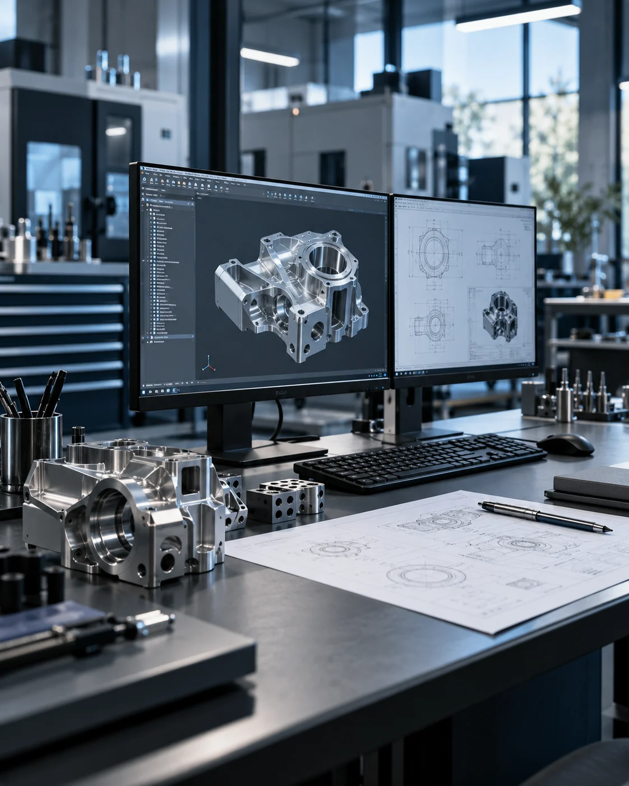

ONE-OF-ONE
& SPECIALDELE
Én særlig komponent fremstillet efter dit konkrete behov.
OG INDEN FOR TOLERANCERNE.
Bearbejdning af komplekse geometrier og specialdele i metal. Fra enkelte emner til mindre serier efter opgavens behov.
En opgave bliver ikke mindre interessant, fordi den mangler en tegning, ikke kan købes som standard eller kræver en anden tilgang. Først skal vi forstå problemet. Derefter finder vi metoden.

Det kan være en løs skitse, en ødelagt reservedel, en CAD-fil eller et problem uden en oplagt løsning. Vi afklarer funktion, begrænsninger og hvilke oplysninger, der mangler.
Hver opgave vurderes individuelt. Ikke alle projekter kræver alle tre faser.

Kreativitet er fri. Kravene er konkrete. Vi ser på mål, pasninger, overflader og funktion – og vælger kontrolmetoden efter det, delen faktisk skal kunne. Ingen tomme løfter om tolerancer, der ikke er vurderet.
Én ødelagt reservedel. Én idé, der skal testes. Eller et emne, ingen sælger som standard. Datum Prototyping tager udgangspunkt i funktionen – og finder derefter den rigtige vej.

Fra aluminium og messing til almindeligt stål, rustfrit/syrefast stål og værktøjsstål. Valget afhænger af funktion, belastning, miljø og krav til bearbejdning.
Materialekvalitet, mål og fremstillingsmulighed afklares for hver opgave.
SPØRG TIL ET MATERIALE ↗Du behøver ikke komme med en færdig tegning eller kende fremstillingsmetoden. Vælg et område nedenfor og se konkrete eksempler på, hvad du kan spørge Datum Prototyping om.
Én særlig komponent fremstillet efter dit konkrete behov.
En testdel, hvor idé, pasform eller funktion skal prøves af.
En ny løsning, når den oprindelige del er knækket, slidt eller ikke kan købes.
Dele, der får to ting til at passe sammen eller monteres korrekt.
Opspændinger og praktiske hjælpemidler til en konkret arbejdsopgave.
Flere ens dele eller justeringer, der gør en eksisterende løsning bedre.

Datum Prototyping er et selvstændigt værkstedsprojekt bygget op omkring finmekanik, praktisk problemløsning og lysten til at undersøge opgaver, som ikke passer ind i en standardløsning.
Ambitionen er at udvikle Datum Prototyping til et stærkt dansk navn inden for prototyper, specialfremstilling og R&D. Vi bygger troværdigheden på arbejdet – ikke på at foregive at være større, end vi er.
Ingen standardsager. Ingen krav om færdige tegninger.
Beskriv udfordringen – så finder vi ud af resten sammen.
Det behøver hverken være færdigt, gennemtænkt eller sat på mål. Det vigtigste er at forstå dit behov.
Fortæl hvad du forestiller dig, og hvad løsningen skal kunne.